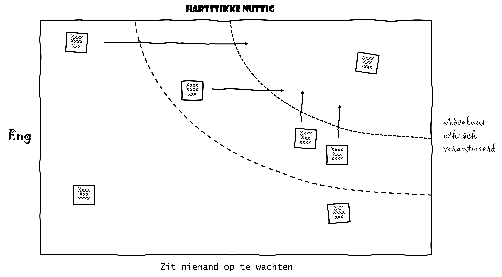
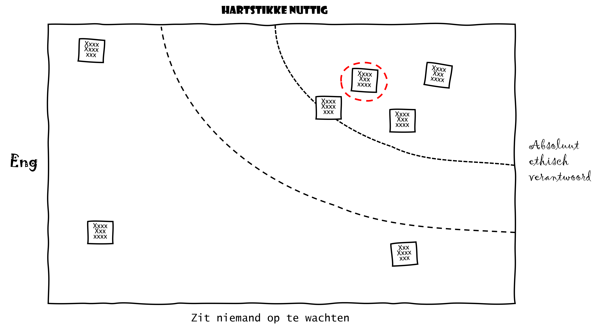
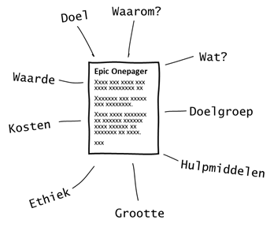
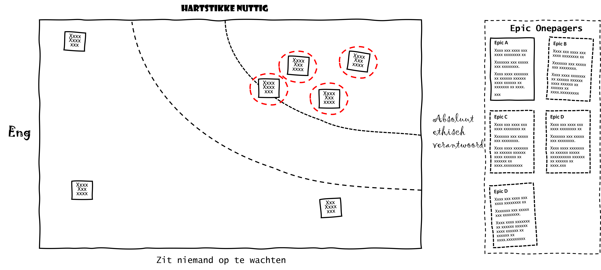

4.5. Opdracht: bedenk een AI toepassing#
In deze opdracht gaan jullie, aan de hand van voorbeeldcases, eigen ideeën voor een AI-toepassing uitwerken. Deze voorbeeldcases vind je aan het eind van deze paragraaf, maar misschien heb je nog een eigen idee.
4.5.1. Leerdoelen van deze lessenserie#
Je weet welke stappen er zoal in systeemontwikkeling zijn.
Je bedenkt ideeën voor AI-toepassingen op basis van een voorbeeldcase.
Je analyseert AI-toepassingsideeën en rangschikt ze op basis van te verwachten toegevoegde waarde en mate van ethische verantwoording.
Je selecteert een AI-toepassingsidee voor verdere uitwerking.
Je beschrijft een AI-toepassingsidee kort in de vorm van een epic of, anders gezegd, een kort verhaaltje.
Je presenteert een AI-toepassingsidee kort en bondig.
4.5.2. Systeemontwikkeling#
Je gaat straks met je klasgenoten in groepjes aan de slag om applicaties, systemen, te bedenken voor een aantal maatschappelijke problemen. In het hele ontwikkeltraject van systemen kunnen we in grote lijnen de volgende belangrijke stappen onderscheiden: probleemstelling, ideevorming, systeembouw en testen. Deze stappen kunnen deels in tijd overlappen, maar na iedere stap kan besloten worden de gehele ontwikkeling te stoppen. Het is natuurlijk geldverspilling als er aan de bouw van een systeem wordt begonnen als de ideevorming nog niet is afgelopen, maar soms is het nodig om te kijken of een idee uit te voeren is door een kleine test te doen.
Probleemstelling: voordat een systeem kan worden ontwikkeld, moet eerst duidelijk worden welke problemen het moet oplossen en hoe dit ongeveer moet gebeuren. In deze fase moet tot uiting komen wat een organisatie met een systeem wil bereiken en wat de omvang is van de middelen om het systeem te ontwikkelen. Het resultaat na deze stap is een initiatief om een systeem te ontwikkelen.
Ideevorming: het probleem is duidelijk, maar hoe nu verder? In deze stap worden verschillende voorstellen bedacht om tot een systeem te komen. Er wordt niet alleen nagedacht vanuit de wens van de organisatie, maar er moet ook rekening worden gehouden met de haalbaarheid van het systeem, de ethische aspecten en - ook heel belangrijk - met de wensen van de gebruikers van het toekomstige systeem. Het resultaat na deze stap is een document met de eisen aan het systeem, maar nog zonder detailuitwerking. In het document komen een korte samenvatting (epic onepager) en een verzameling van wensen van de organisatie en de eindgebruikers (user stories).
Systeembouw: **** is er een haalbaar idee gekomen, dan kan het systeem worden gebouwd. Eerst wordt het systeemontwerp gemaakt en als dit voldoet, wordt het ontwerp uitgewerkt tot het werkelijke systeem.
Testen: tijdens en na de bouw van het systeem wordt getest of het goed functioneert en of de organisatie en de eindgebruikers het accepteren.
In deze opdracht ga je aan de slag met de ideevorming in het ontwikkelen van AI-systemen. Het zal je niet verbazen dat de nadruk op de ethische aspecten van de systemen ligt. Ga maar eens lekker los met je klas: wie verzint de meest nuttige en ethisch verantwoorde toepassing?
4.5.3. Voorbereiding van de opdracht#
Voordat jullie aan de slag gaan printen jullie eerst voorbeeldcases, zorgen jullie voor stiften en post-it notes en tekenen jullie een “engheidsmatrix” op grote vellen papier op de muur van het lokaal:
{kind=link}
Verdeel de klas zo mogelijk in zes groepjes. Geef elke groep een van de voorbeeldcases aan het einde van deze paragraaf. Zijn er te weinig leerlingen, kies dan uit de voorbeeldcases de meest aanprekende.
4.5.4. Stap 1: Ideation (groepsopdracht)#
Ideation (ideevorming): bedenken van onderzoeksideeën. In deze groepsopdracht ga je met je groep ideeën bedenken voor AI-toepassingen op basis van de case die jouw groep heeft gekregen. Schrijf elk idee voor een toepassing in een korte kernzin op een post-it.
{kind=link}
4.5.5. Stap 2: Plaats je idee in de engheidsmatrix (groepsopdracht)#
Plaatsing: na afloop van stap 1 plaatsen alle groepen alle ideeën voor hun case in de engheidsmatrix. Bedenk nu eerst individueel of alle opgeplakte ideeën voor jou een juiste plaats in de engheidsmatrix hebben. Maak vervolgens met alle leerlingen samen een lijst met de ideeën waarover verschil van mening bestaat met betrekking tot de plaatsing. Dit is een groepsopdracht, dus moedig elkaar aan tot discussiëren. Zijn jullie het min of meer eens met de plaatsing, bespreek dan met elkaar hoe je ideeën die weinig toegevoegde waarde hebben wat waardevoller en nuttiger kunt maken. Bekijk ook hoe je ideeën die weinig ethisch verantwoord zijn zo kunt aanpassen dat ze wél ethisch verantwoord worden.
{kind=link}
4.5.6. Stap 3: Kies een AI-toepassingsidee (individuele opdracht)#
Selectie: elke leerling kiest nu een onderzoeksidee uit de matrix en werkt dit idee uit tot een onderzoeksvoorstel. Je mag best hetzelfde idee kiezen als een medeleerling, maar het is wel de bedoeling dat je dit idee verder individueel uitwerkt. De gedachte achter deze individuele manier van werken is dat je leert om eerst zelf te brainstormen over AI-ideeën en dat daarna de verschillende ideeën uit de groep worden getoetst op ethische aspecten en toegevoegde waarde, om uiteindelijk tot het beste idee te komen. Een organisatie die op zoek is naar een systeem voor een probleem zoekt in het ideale geval een idee dat ethisch verantwoord is en dat veel waarde toevoegt aan de maatschappij of aan de organisatie. Dit idee moet vervolgens tot het gewenste systeem leiden. Denk bij het vormen van jouw idee, en bij de evaluatie van de ideeën van anderen, dan ook al na over de haalbaarheid van een idee. Een idee dat erg ethisch verantwoord én nuttig is, maar waarvoor politieke besluitvorming nodig is (bijvoorbeeld wanneer wetgeving moet worden aangepast), is niet erg haalbaar om verder uit te werken. Hetzelfde geldt voor ideeën waarvoor de dataverzameling om tot een succesvol systeem te komen, te kostbaar of te ingewikkeld is.
{kind=link}
4.5.7. Stap 4: Beschrijf je AI-toepassingsidee (individuele opdracht)#
Inleiding van je beschrijving van een AI-toepassing: beschrijf kort en bondig op één A4’tje de AI-toepassing die je gekozen hebt. Beschrijf de aanleiding voor je idee en geef aan welk probleem ermee wordt opgelost. Maak de beschrijving in de vorm van een epic onepager. Je kunt de volgende punten daarvoor als handvat gebruiken (maar neem ze niet klakkeloos over):
{kind=link}
Wat is het doel van je AI-toepassing?
Waarom zou de maatschappij of de organisatie deze AI-toepassing moeten maken?
Wat houdt de AI-toepassing in?
Wat is de doelgroep van je AI-toepassing?
Welke hulpmiddelen zijn ervoor nodig?
Wat is de omvang van het ontwikkelproces van de AI-toepassing? In tijd? En in doorlooptijd?
Wat kun je zeggen over ethiek?
Welke waarde levert je AI-toepassing op?
Probeer je inleiding zo SMART mogelijk te maken:
Specifiek: benoem details en maak duidelijk wat je voor ogen hebt. Maak je doel specifiek door te omschrijven wat je concreet wilt bereiken. Gebruik geen woorden die op verschillende manieren zijn op te vatten. Zo is bijvoorbeeld het woord ‘gezond’ in onderstaand doel niet concreet.
Niet specifiek: ‘Ik wil dat deze applicatie het aantal uren sport onder de jeugd bevordert.’
Wel specifiek: ‘Ik wil dat deze applicatie het aantal uren sport onder de jeugd bevordert met minstens 10%.’
Meetbaar: koppel cijfers aan je doelen. Denk aan de omzet, het aantal transacties, de levertijd of hoe tevreden je klanten zijn. Druk deze cijfers uit in een percentage of in vaste cijfers. Zorg ook dat je deze cijfers kunt meten.
Niet meetbaar: ‘Ik wil dit onderdeel van de applicatie snel af hebben en weinig kosten maken.’
Wel meetbaar: ‘Ik wil dit onderdeel van de applicatie binnen 7 weken hebben ontwikkeld binnen het budget van € 70.000.’
Acceptabel: iedereen die bij de doelen betrokken is, moet ermee akkoord gaan. Zonder draagvlak komt er weinig van je doelen terecht. Betrek collega’s bij het opstellen en baseer je op ervaringen uit het verleden. Pas als jijzelf en anderen achter de doelen staan, zijn ze acceptabel.
Niet acceptabel: ‘Er is misbruik van de subsidie voor kinderopvang. Ik wil alle verkeerd uitgegeven subsidie terugvorderen, evenals de subsidie die daarvoor is ontvangen. De subsidieaanvrager is 100% verantwoordelijk.’
Wel acceptabel: ‘Er is misbruik van de subsidie voor kinderopvang. Ik wil zo veel mogelijk misbruik voorkomen en moedwillig valse declaraties met toegevoegde boete terugvorderen. Het moet dan onomstotelijk vaststaan dat de subsidieaanvrager bedrog heeft gepleegd.’
Realistisch: maak je doelen haalbaar. De kunst is om ze niet te makkelijk, maar ook niet onbereikbaar te maken. Bij een te makkelijk doel is het niet nodig om je extra in te zetten. En weten dat je je doel toch niet haalt, kan demotiverend werken. Een realistisch doel is een ambitieuze uitdaging waarvoor je graag je best doet.
Niet realistisch: ‘Ik wil al mijn vakken op school afsluiten met een 10.’
Wel realistisch: ‘Ik wil al mijn vakken op school afsluiten met minstens een 7.’
Tijdgebonden: zet op papier wanneer de activiteiten beginnen en eindigen. Een deadline maakt plannen eenvoudiger. Als je SMART geformuleerde doel zijn eindpunt bereikt, is het tijd om te evalueren. Je analyseert dan wat er goed ging en wat beter kon. Op basis hiervan stel je nieuwe SMART-doelen op.
Niet tijdgebonden: ‘Ik wil mijn applicatie uitbreiden met vijf nieuwe functies.’
Wel tijdgebonden: ‘Ik wil mijn applicatie voor het eind van dit jaar uitbreiden met vijf nieuwe functies.’
4.5.8. Stap 5: Maak een overzicht en bespreek de resultaten (groepsopdracht)#
Hang nu alle uitgewerkte ideeën naast de engheidsmatrix. Zo maak je in de klas een overzichtelijk beeld van alle initiatieven, ook wel een Obeya-room genoemd, voor AI-toepassingen:
{kind=link}
Elke leerling presenteert in twee minuten zijn AI-toepassingsidee aan de anderen in de groep.
4.5.9. Voorbeeldcases#
4.5.9.1. Case ‘Felyx’#
Felyx is een succesvolle onderneming die gedeelde elektrische scooters aanbiedt als een innovatief mobiliteitsconcept. Felyx heeft ambitieuze plannen voor duurzaam en gedeeld stadsvervoer. Omdat steden voller worden en de luchtkwaliteit verslechtert, is er een transitie nodig richting nieuwe vormen van mobiliteit. Felyx biedt gedeelde elektrische scooters op ritbasis aan, voor € 0,30 per minuut. In drie simpele stappen kun je al gebruikmaken van Felyx. Gebruik de Felyx-app om de dichtstbijzijnde scooter te lokaliseren, reserveren en activeren. Met Felyx reis je snel, comfortabel en duurzaam door de stad. Je profiteert van alle voordelen van een elektrische scooter zonder last te hebben van de nadelen die kleven aan het bezit van een eigen scooter.
Quinten Selhorst, CEO van Felyx: “Omdat we met Felyx hét ideale transportmiddel kunnen aanbieden voor iedereen in de grote stad. Ik vind het belangrijk om snel en op een duurzame en betaalbare manier op mijn plaats van bestemming te komen, en met Felyx kan dat. Bovendien is het nog leuk ook, en waarborgen we de veiligheid zo veel als mogelijk door onze e-scooters te begrenzen en uit te rusten met all weather banden en een fietsbel. Kortom: Felyx biedt voor mij het beste van alle werelden.”
De organisatie groeit snel. In Amsterdam zijn er bijvoorbeeld 350 volledig elektrische scooters beschikbaar, in Rotterdam zo’n 800, in Den Haag zo’n 500 en in Groningen meer dan 100. Het concept werkt simpel: met de Felyx-app vind je automatisch alle Felyx-e-scooters die bij jou in de buurt zijn. Wanneer je een geschikte e-scooter hebt gevonden, reserveer je hem met één druk op de knop. Met de ingebouwde gps, die je ook voorziet van een looproute, kun je de e-scooter vervolgens makkelijk vinden. Ontgrendel de e-scooter met de app en start de huur.
Maar al die huurscooters leveren soms ook problemen op. Mensen die een deelscooter achterlaten op een plek waar anderen er last van hebben, bijvoorbeeld midden op de stoep, kunnen daar voortaan een boete voor krijgen. Dat heeft het bedrijf Felyx, een van de grootste aanbieders van deelscooters in Nederland, donderdag aangekondigd. Als de scooter verplaatst moet worden, moet de gebruiker € 50 kosten betalen. En als mensen regelmatig in de fout gaan, mogen ze misschien helemaal geen deelscooter meer huren.
Boetes geven is één oplossing. Maar Felyx wil graag van jou, de analytics translator, horen hoe data ook op een meer positieve manier gebruikt kan worden om een oplossing te vinden voor al die scooters die verkeerd geparkeerd worden. Quinten Selhorst, de CEO van Felyx, heeft jou – én een aantal collega analytics translators – ingeschakeld om een oplossing te bedenken en heeft gevraagd of je een onderzoeksvoorstel voor hem kunt maken. En de bedenkers van de beste oplossingen mogen bij hem op kantoor komen pitchen.
Voor deze voorbeeldcase is de volgende bron gebruikt: Felyx-website: https://felyx.com/nl/nl/rotterdam.
4.5.9.2. Case ‘Geldezel’#
Stel je voor: je werkt bij een grote, internationaal opererende bank als analytics translator voor de afdeling Operationeel risico en je krijgt een e-mail van de risicomanager van de bank, waarin jouw hulp wordt gevraagd:
“Een jonge vrouw van 23 jaar heeft twee maanden geleden bij ons een betaalrekening geopend. Ze is op de normale manier gescreend en kwam nergens in onze waarschuwingssystemen voor. Ze studeert aan de Hogeschool Utrecht en is een prima klant voor ons, omdat ze in de toekomst wellicht haar salaris via onze bank laat lopen en een hypotheek voor een woning gaat aanvragen. Maar nu is er wat vreemds gebeurd: er is onlangs al twee keer opeens een bedrag van ruim 9000 euro cash op haar rekening gestort. Dat bedrag heeft ze vrijwel meteen weer overgemaakt naar een andere rekening in Rotterdam en daarvandaan is het ook weer direct overgemaakt naar een rekening waarop ik geen zicht meer heb. Kun jij me misschien helpen om meer zicht te krijgen op dit soort transacties? We willen dit in de toekomst eigenlijk voorkomen, omdat we denken dat ze misschien een geldezel is.”
Er is wetgeving die moet voorkomen dat dit soort witwaspraktijken nog langer plaatsvindt. Elke financiële instelling moet haar klanten vooraf goed doorlichten en naderhand zorgvuldig monitoren. Door cliëntenonderzoek wordt de klant geïdentificeerd (Ben je wel wie je zegt dat je bent?) en gescreend (Kun je een risico vormen?). Ben je eenmaal klant, dan wordt je financiële handel en wandel permanent gemonitord. Dit is het ‘Ken-uw-klant’-principe. Vaak kom je de Engelse termen tegen voor het cliëntenonderzoek (CDD, Customer Due Diligence) en het ‘Ken-uw-klant’-principe (KYC, Know Your Customer).
De risicomanager geeft verder ook nog aan dat de bank in het CDD-proces graag AI wil gebruiken voor het in kaart brengen van de achtergrond van nieuwe klanten. Op dit moment is er nog een heel grote afdeling in Roemenië, waar meer dan duizend bankmedewerkers de achtergrond van potentiële nieuwe klanten uitzoeken. Dat doen ze veelal door op het internet en in social media naar signalen te zoeken die aangeven dat ‘dit weleens een slechte klant zou kunnen zijn’. Maar de risk manager denkt dat AI en data science hierbij kunnen helpen… Kun jij als analytics translator een onderzoeksvoorstel maken waarin je uitlegt hoe je de risicomanager gaat helpen? En o ja, ze heeft je gevraagd of je je voorstel over drie weken aan haar MT wil komen pitchen.
Voor deze voorbeeldcase is de volgende bron gebruikt: https://www.betaalvereniging.nl/actueel/achtergrondinformatie/in-het-kort/ken-uw-klant-in-het-kort/.
4.5.9.3. Case ‘Job-interview robot’#
Bekijk het filmpje ‘Robots Could Be Conducting Job Interviews Next Year’ op YouTube:
video
Een 41 cm grote robot-recruiter met de naam Tengai kan de toekomst zijn van job interviews. Tengai is geprogrammeerd om elk interview op precies dezelfde manier uit te voeren. Het houdt zich niet bezig met kletspraatjes voorafgaand aan het interview en stelt elke vraag op dezelfde toon en in dezelfde volgorde. Tengai stuurt een transcript naar menselijke werkgevers met alleen de antwoorden van de geïnterviewde, waardoor eventuele vooroordelen of vooringenomenheid (bias) worden verminderd. De robot is gemaakt door Furhat, een Zweeds bedrijf op het gebied van kunstmatige intelligentie en sociale robotica. Ze hebben de afgelopen vier jaar een mensachtige computerinterface gemaakt, die menselijke spraak en gezichtsuitdrukkingen nabootst. Naar verwachting zal Tengai al in mei 2019 in echte situaties worden ingezet. Het concept wordt sinds oktober 2018 getest in samenwerking met een van de grootste wervingsbureaus van Zweden, TNG. Sollicitatiegesprekken met echte kandidaten zullen naar verwachting in mei 2019 beginnen en een Engelse versie zou al in 2020 beschikbaar kunnen zijn.
Ook in Nederland wordt robot-recruitment al ingezet. Zo levert Joboti, een start-up die met een chatbot voor recruitment-toepassingen de wereld verovert, slimme wervingsautomatisering voor screening, selectie en planning via chatbots aan gerenommeerde retailers, accountants en uitzendbureaus.
Joboti levert onder andere chatbots voor staffing bureaus, die gericht op de werving & selectie, detacherings- of uitzendbranche zo snel mogelijk de juiste talenten koppelen aan opdrachtgevers. Zo’n chatbot kan organisaties ondersteunen om nog sneller in contact te komen met de juiste kandidaat. En daarnaast levert Joboti ook chatbots voor werkgevers, die helpen in de zoektocht naar naar nieuw talent voor een organisatie. Een chatbot ondersteunt op cruciale momenten in de candidate journey, door bijvoorbeeld de tien meest gestelde vragen te beantwoorden of door de kandidaat te informeren over de status van zijn sollicitatie. De candidate journey, oftewel de sollicitantenreis van een kandidaat, omvat alle contactmomenten die kandidaten hebben bij een organisatie.
Stel je voor: je bent op een conferentie waar Luuk van Neerven, de founder van Joboti, een geweldige presentatie geeft over zijn bedrijf. Aan het einde van de dag stap je toevallig op de tiende etage van het conferentiegebouw samen met hem in de lift. Welk onderzoeksvoorstel zou jij als analytics translator aan hem pitchen voordat hij tien etages lager weer uitstapt?
Voor deze voorbeeldcase is de volgende bron gebruikt: https://www.joboti.com/
4.5.9.4. Case ‘Starterswoning’#
De gekte op de woningmarkt raakt starters hard. Net afgestudeerden die aan een nieuwe baan beginnen, kunnen met geen mogelijkheid doorschuiven naar een eigen woning. In je studentenkamertje blijven lijkt de meest voor de hand liggende optie. Maar hoe komt dat? En waar kunnen starters wél terecht?
Op dit moment is er sprake van krapte op de woningmarkt. Er is weinig aanbod en dat wat wel te koop of te huur wordt aangeboden, is voor starters doorgaans onbetaalbaar. In 2013 waren woningen 42 procent goedkoper dan nu. Uit cijfers van het Centraal Bureau voor de Statistiek (CBS) blijkt dat de gemiddelde koopprijs in mei dit jaar 333.000 euro bedroeg. En als je niet kunt kopen, wil je huren. Maar voor een huurwoning in de vrije sector betaal je gemiddeld 1.076 euro per maand en voor een appartement zelfs 1.114 euro. Op sommige huursites, vooral in de Randstad, worden studio’s van slechts 30 m2 verhuurd voor 900 euro per maand. Als je als alleenstaande een plek voor jezelf wilt, zijn de maandelijkse lasten vaak te hoog om in je eentje op te hoesten. Daarnaast is het voor starters lastig om een fatsoenlijke hypotheek te krijgen. Hoewel de hypotheekrentes enorm laag zijn en het aantrekkelijk lijkt om nu een hypotheek af te sluiten, kom je met een modaal inkomen niet in de buurt van een koopwoning van rond de 300.000 euro. Dan moet je nog veel geld bijleggen. Business Insider rekende uit dat je als huishouden 71.000 euro per jaar moet verdienen om een hypotheek te krijgen die de gemiddelde huizenprijs (in november 2019) precies kan financieren met een maximale hypotheek (Kassa, BNNVARA, 2020). Je mag met een aantal studenten op de koffie bij wethouder Kees Diepeveen, die in de gemeente Utrecht verantwoordelijk is voor wonen. Omdat jij hartstikke inspirerend vertelt over je studie Data Driven Business, vraagt hij aan jou of je niet een voorstel zou willen maken voor een onderzoek naar manieren om het huren en kopen van woningen voor starters te verbeteren. Over twee weken mag je komen pitchen. Wat komt er in je onderzoeksvoorstel te staan?
Voor deze voorbeeldcase is de volgende bron gebruikt: Kassa, BNNVARA, 2020.
4.5.9.5. Case ‘Zwerfafval’#
Wie zijn plastic, blik en drinkpakken nog steeds netjes scheidt, kan daar komend najaar definitief mee ophouden. De gemeente Utrecht stopt in een groot deel van de stad met het apart ophalen van plastic.
Sinds een aantal jaar komen er in de Utrechtse straten steeds meer ondergrondse containers voor restafval. In wijken die zulke containers hebben, komt de vuilniswagen niet meer langs voor het ‘gewone’ huisvuil. Dat moet je dan voortaan elke keer zelf naar die ondergrondse containers brengen. De gemeente hoopt dat meer inwoners hun afval gaan scheiden. Het komende halfjaar gaan wijken als Ondiep, Oog in Al en Lombok over op dit nieuwe systeem. Als laatste stappen ook Oost (onder meer Oudwijk, Sterrenwijk en Rijnsweerd) over. Voor de binnenstad komt er een apart systeem. Daarover wordt dit najaar een besluit genomen.
Maar bij die ondergrondse containers is het nu al vaak een bende. Dat zal in de toekomst vast niet minder worden. Vanwege de coronapandemie, de lockdown en het thuiswerken is er steeds meer afval. De gemeente leegt de containers dan ook vaker. Daarnaast hoopt Utrecht ook op een ‘mentaliteitsverandering’ van de inwoners. Rondom plekken waar veel overlast van zwerfafval is, gaat de gemeente bewoners actief aanspreken.
Overlast van zwerfafval is een hardnekkig probleem in Utrecht, dat nu onder het mom van Actieplan Utrecht Schone Stad anders zal worden aangepakt. “Veel inwoners ergeren zich aan zwerfafval en zetten zich hier ook tegen in”, zegt verantwoordelijk wethouder Kees Diepeveen. “Zo ruimen inmiddels ruim 5000 vrijwilligers in Utrecht structureel zwerfafval op. Toch zijn er plekken die overlast blijven geven. Deze hotspots van zwerfafval pakken we met de nieuwe aanpak aan. Dit willen we samen met onze inwoners, ondernemers en andere betrokkenen doen.”
Je bent net begonnen in een nieuwe baan als analytics translator bij de gemeente Utrecht. In je eerste werkweek heb je een kennismakingsgesprek met Kees Diepeveen, de wethouder die verantwoordelijk is voor het ophalen van vuilnis. Hij vraagt je of jij niet een onderzoeksvoorstel voor hem wilt maken om voor eens en voor altijd een einde aan al die troep op straat te maken. “Data kan ons daarbij helpen. En jij hebt verstand van data, dus ik verwacht veel van jouw ideeën. Praat me over twee weken nog eens bij, ik vraag mijn secretaresse om alvast een koffieafspraak in te plannen…”
Voor deze voorbeeldcase is de volgende bron gebruikt: https://www.ad.nl/utrecht/vanaf-wanneer-komt-de-vuilnisauto-niet-meer-langs-in-utrecht-en-5-andere-dingen-die-je-moet-weten-over-afval~a552ab7c/
4.5.9.6. Case ‘Uitstelgedrag’#
Uitstelgedrag staat hoog in de lijst van problemen waar studenten mee kampen. “Straks ga ik er volledig voor. Of morgen. Of volgende week.” Er is altijd wel wat leukers te doen dan dat wat je moet doen. Helaas betaal je voor al dat uitstellen vaak een hoge prijs: torenhoge stress en onhaalbare deadlines. Tip: maak een duidelijke planning en beloon jezelf voor behaalde doelstellingen. Ook samen studeren drijft de druk én de motivatie op!
Uitstelgedrag is voor veel mensen een herkenbaar iets. Wie heeft er op bepaalde momenten nou geen last van uitstelgedrag? Dagelijkse voorbeelden waarbij uitstelgedrag kan voorkomen, zijn het inruimen van de vaatwasser of het invullen van de belastingaangifte.
En dat geldt ook voor studie-uitstelgedrag: het vrijwillig uitstellen van een voorgenomen en noodzakelijke en/of belangrijke studie-activiteit, ondanks de te verwachten mogelijke negatieve gevolgen die zwaarder wegen dan de positieve gevolgen van het uitstellen. Ook onder studenten komt uitstelgedrag of studie-ontwijkend gedrag, zoals het ook weleens wordt genoemd, vaak voor. Uit wetenschappelijk onderzoek blijkt dat 70 procent van de studenten er regelmatig last van heeft. Wanneer studenten studie-activiteiten uitstellen, noemen we dat studie-uitstelgedrag (in het Engels: academic procrastination).
Onder 483 collegestudenten is onlangs onderzoek gedaan naar het verband tussen smartphoneverslaving en academic procrastination. De resultaten laten zien dat bijvoorbeeld smartphoneverslaving positief gecorreleerd is aan studie-uitstelgedrag, en negatief gecorreleerd aan zelfwerkzaamheid in de studie. En tegelijkertijd blijkt studie-uitstelgedrag weer negatief gecorreleerd te zijn aan die zelfwerkzaamheid. Anders gezegd: smartphoneverslaving blijkt een prima voorspeller van uitstelgedrag te zijn.
Kun jij AI-toepassingsideeën bedenken die gebruikt kunnen worden om studenten te helpen om van hun uitstelgedrag af te komen?
Voor deze voorbeeldcase is de volgende bron gebruikt: https://www.parool.nl/nieuws/studenten-studie-lijdt-onder-verslaving-sociale-media~bf8fd501/